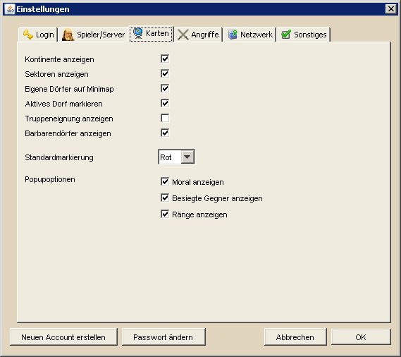

Karteneinstellungen |
|
| |
|  |
| |
| Die Karteneinstellungen enthalten alle Einstellungen die für der Darstellung von und auf der Hauptkarte und der Minimap verantworlich sind. Im oberen Bereich kann man das Grafikpaket festlegen, mit welchen die Dörfer auf der Hauptkarte dargestellt werden. Die Vorschau kann, sofern man nicht weiß wofür man sich entscheiden soll, bei der Entscheidungsfindung helfen. Um das gewählte Grafikpaket zu verwenden klickt man auf Auswählen und die Karte wird, sobald die Einstellungen über OK bestätigt werden, aktualisiert. Die weiteren Einstellungen sind im folgenden erklärt. |
| |
|
| Kontinente anzeigen |
Das Kontinentraster auf der Hauptkarte und der Minimap anzeigen / verbergen |
|
| Sektoren anzeigen |
Das Sektorenraster auf der Hauptkarte anzeigen / verbergen |
|
| Enfernungen anzeigen |
Die Entfernung in Feldern bei Verwendung des Werkzeugs zum Messen von Entfernungen und Laufzeiten anzeigen bzw. verbergen |
|
| Eigene Dörfer auf Minimap |
Die Dörfer des aktuell gewählten In-Game Spielers auf der Minimap gelb markieren |
|
| Truppeninfo anzeigen |
Zeigt importierteTruppeninformation als Popup über Dörfern an wenn sich der Mauszeiger über ihnen befindet |
|
| Truppeneignung anzeigen |
Zeigt, abhängig von den importierteTruppeninformation, die Truppenausrichtung (Off, Def, Kav-Def, Bogen-Def) in den Dörfern an |
|
| Barbarendörfer anzeigen |
Barbarendörfer werden auf der Hauptkarte und der Minimap gezeichnet / nicht gezeichnet |
|
| Standardmarkierung |
Gibt an, welche Farbe die Markierungspunkte der Dörfer haben, wenn keine eigene Markierung zu einem Dorf vorliegt |
|
| |
|
Momentan sind drei Grafikpakete verfügbar. Wer Interesse und eine entsprechende künstlerische Begabung hat kann sich gern an weiteren Kartengrafiken versuchen und diese in DS Workbench allen zur Verfügung stellen, natürlich mit einem entsprechenden Verweis auf euch als Ersteller. Bei Interesse meldet euch einfach unter support@dsworkbench.de |